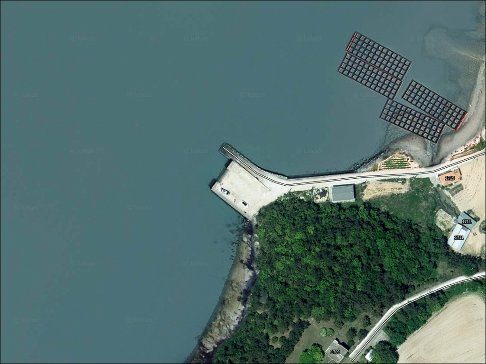
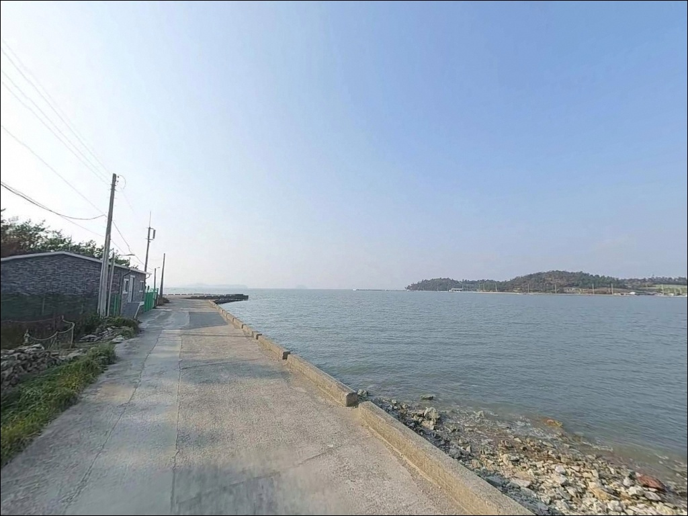
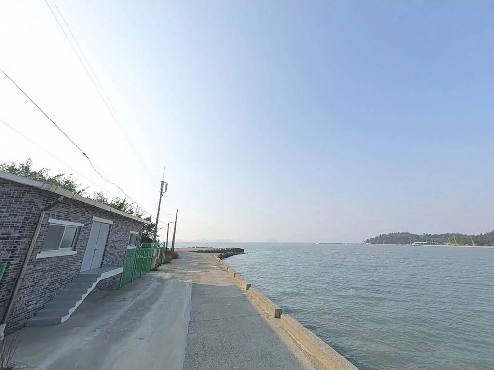
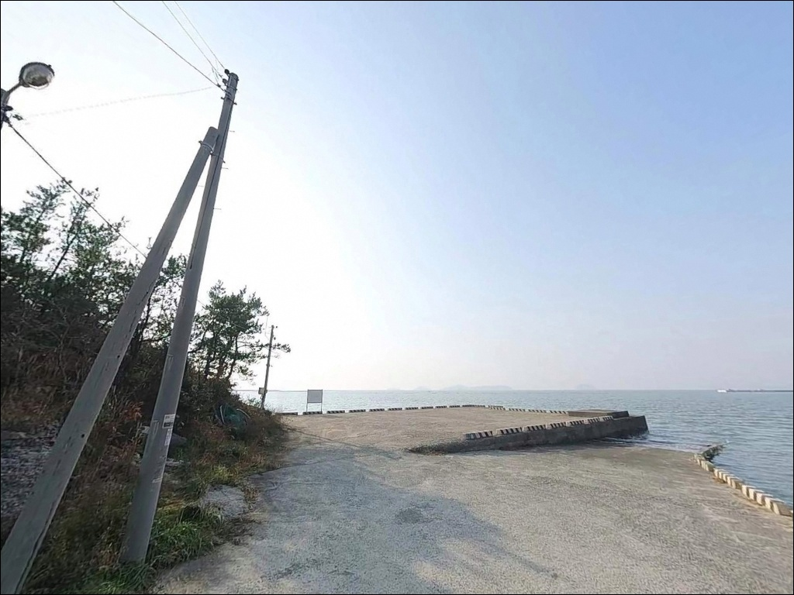
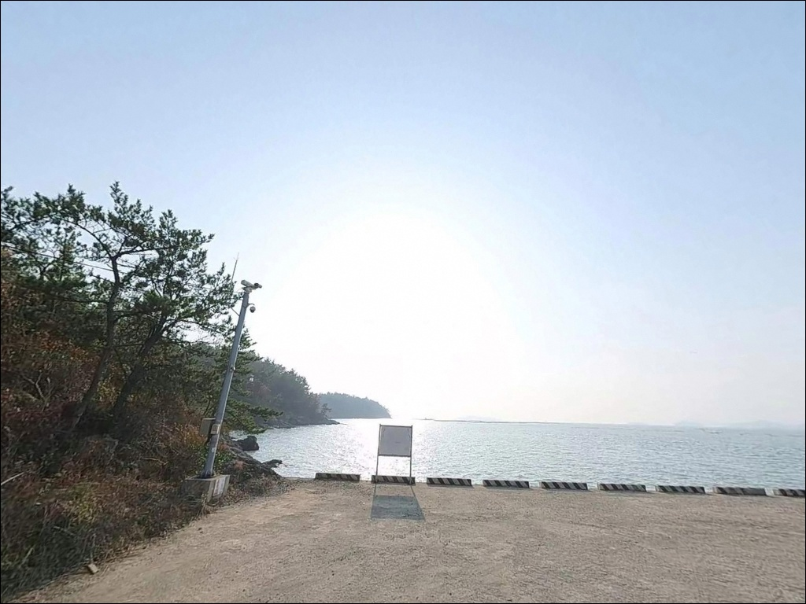
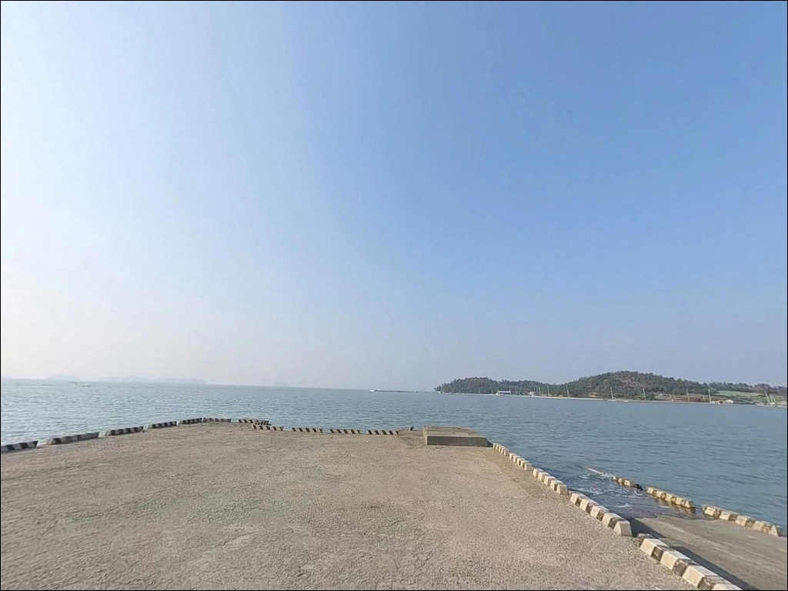
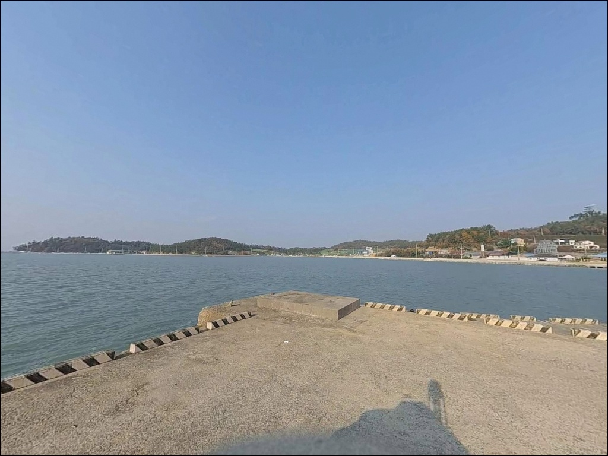
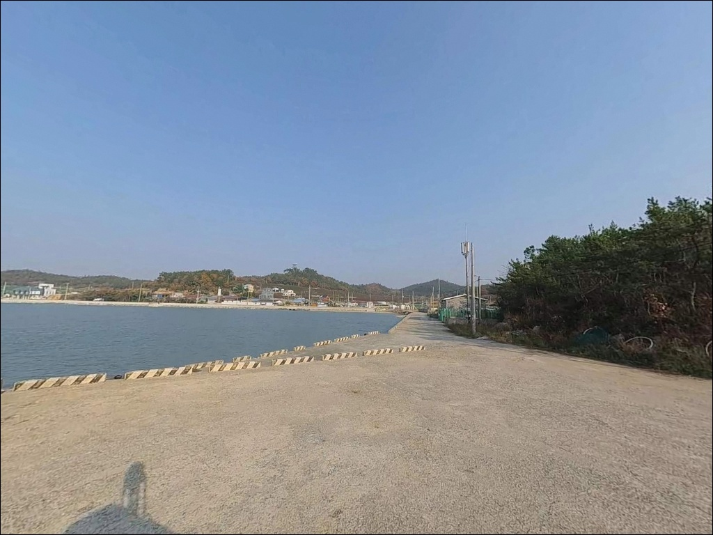
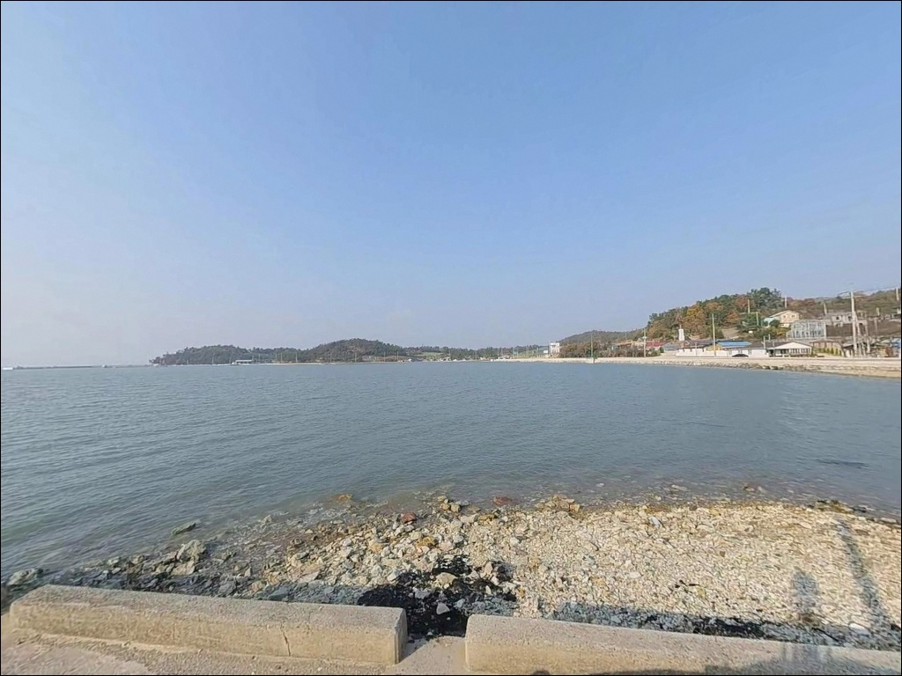

나리 남 선착장, 진도 전남 진도군 바다의 여운이 오래 남는 차박, 낚시 감성 포인트
이 페이지에는 광고(제휴 링크 포함)가 있으며, 광고 링크를 통해 구매하면 운영자가 판매 수익 또는 수수료를 받을 수 있습니다. 포인트 사진: 카카오맵 스카이뷰·로드뷰. 이 페이지의 지도·사진 이미지는 카카오맵의 실제 서비스 이미지와 다를 수 있습니다.


포인트 안내
나리 남 선착장
전남 진도군 군내면 나리 405-14
나리 남 선착장 하나만 목적지로 잡고 들어서면
명량수도 조류가 살아있는 구간을 놓치기 쉽습니다.
이 일대는 선착장을 중심으로
방파제와 곶부리가 짧은 거리 안에 이어지는 구조로,
라인 전체를 파악한 뒤 자리를 잡는 것이
조과를 가르는 첫 번째 판단입니다.
진도 북부 군내면 나리 일대는
울돌목(명량수도) 영향권 안에 위치한 해안 낚시 구간입니다.
조류 활성 지역인 만큼
물때를 기준으로 출조 타이밍을 잡는 것이
이 포인트 접근의 전제 조건입니다.
이 글은 나리 남 선착장의 진입 여건,
인근 낚시 구간 구조, 차박 체류 조건,
낚시 스타일별 접근 방법에 집중합니다.
조황 단정이나 특정 어종 보장은
이 글의 범위에 포함되지 않습니다.

1. 진입 동선과 선착장 접근 여건
군내면 나리 일대는 진도대교를 건넌 뒤
해안도로를 따라 북쪽으로 이동하는 동선입니다.
마을로 들어서면 농어촌 수준의 좁은 도로가 이어지는 구조로,
소형~중형 차량이 기본 기준이며
대형 SUV나 장축 차량은 출발 전
위성지도로 진입로를 먼저 확인하는 편이 안전합니다.
회차 공간은 선착장 입구 인근에 한정되어 있습니다.
후진 진출이 어려운 차량이라면
갓길 여건과 회차 가능 구간을 미리 파악해 두는 것이 좋습니다.
주차는 선착장 옆 공터를 활용하는 방식이 일반적이며,
어선 이동 동선을 막지 않는 자리를 먼저 확인해야 합니다.
아직 많이 알려지지 않은 소형 어촌 선착장이므로
초행이라면 위성지도 사전 확인 후 출발하는 것이
기본 준비입니다.
진입 전 나리 남 선착장 일대 최신 도로 상황도
함께 검색해 보시기 바랍니다.

2. 차박 환경과 야간 체류 여건
나리 일대는 인구가 적은 소규모 어촌 마을입니다.
야간 차량 통행이 거의 없고
민가 밀집도가 낮아
프라이버시는 상대적으로 양호한 편입니다.
다만 선착장 말단 구간이나 곶부리 방향은
조명이 없는 구간이 포함되어 있어
개인 헤드랜턴은 필수입니다.
차박이란 차량을 숙박 공간으로 활용하며
현장에서 하룻밤 머무는 여행 방식입니다.
나리 남 선착장은 주차 공간이 넉넉하지 않아
차박을 메인으로 삼기보다
낚시 중심으로 접근하고
야간 체류는 보조적으로 계획하는 편이 현실적입니다.
명량수도 영향권인 만큼
기상에 따라 바람 영향을 받는 경우가 있습니다.
남풍·서풍이 강해지는 날에는
외해 방향 파도가 선착장까지 영향을 줄 수 있어
출발 전 기상 예보 확인은 필수입니다.


3. 주변 편의시설 및 인프라 현황
나리 남 선착장 반경 3km 이내에는
편의점이나 식당을 기대하기 어렵습니다.
소규모 어촌 마을 특성상
완전 자급 체제로 진입하는 것이 기본 원칙입니다.
식수, 얼음, 낚시 소품, 연료 모두
출발 전에 갖춰야 합니다.
진도읍까지 이동하면 마트와 주유소 등
기본 생활 인프라를 이용할 수 있습니다.
나리 방면으로 출발하기 전
진도읍에서 필요한 물품을 모두 챙기는 것이
가장 효율적인 동선입니다.
응급 상황 발생 시 진도읍까지 거리가 상당하므로
비상약품과 수분 준비는 철저히 갖춰야 합니다.

4. 방문 전 점검과 준비사항
나리 남 선착장 방문에서 가장 먼저 확인할 것은
물때입니다.
명량수도(울돌목) 영향권에 위치한 이 일대는
사리 전후 조류가 극도로 강해져
어떤 채비를 써도 컨트롤이 어려운 수준까지 세집니다.
바다타임에서 나리 기준 물때를 확인하고
소조 전후 또는 들물 타이밍에 맞춰
출발 시각을 잡는 것이 이 포인트의 기본 전략입니다.
기상 변화가 빠른 진도 해역 특성상
기상청 해양 예보를 당일 아침 다시 한번 확인하는 것이
포인트 낭비를 막는 조건입니다.
갯바위·곶부리 구간은 발판이 고르지 않은 편이라
미끄럼 방지 신발과 구명조끼는 반드시 챙겨야 합니다.
소규모 어촌 마을 인접 포인트이므로
이른 새벽 차량 이동 시 소음에 주의하는 것이 기본 매너이며,
어선 접안 동선을 막지 않도록
주차 자리를 먼저 파악해야 합니다.

5. 조류 타이밍이 낚시 조과를 가르는 지형 구조
나리 남 선착장이 속한 진도 북부 해안선은
명량수도의 조류 영향을 직접 받는 구간입니다.
선착장 단독보다 인근 방파제와 곶부리까지 연결된
라인 전체를 하나의 낚시 구간으로 이해하는 것이
이 포인트를 제대로 쓰는 방법입니다.
명량수도 조류 영향권 안에 있는 포인트는
물때를 맞추지 않으면 어떤 채비를 써도
조과를 기대하기 어렵습니다.
선착장 주변은 내만 구조와 외해 노출 구간이
짧은 거리 안에 혼재하는 형태입니다.
내만 방향은 조류가 비교적 안정적으로 흐르며
원투·찌낚시에 적합한 조건을 갖추고 있습니다.
남측 곶부리 방향으로 이동하면
조류 흐름이 직접 닿는 구간이 형성되어
릴찌낚시나 루어에 어울리는 지형이 이어집니다.
바닥은 펄과 암초가 혼재하는 구조로
구간에 따라 채비 손실이 있는 편입니다.
여분 채비를 넉넉하게 준비하고 입장하는 것이
이 일대 낚시의 기본 준비입니다.
출조 전 최신 조황은 반드시 검색해 보시기 바랍니다.


6. 지형에 어울리는 낚시 스타일
이 포인트에서 기본으로 통하는 방식은
원투낚시입니다.
선착장과 방파제 인근 펄 지형은
붕장어·노래미를 노리기에 적합한 구조입니다.
조류가 느려지는 정조 타이밍에
채비를 멀리 보내
바닥을 천천히 탐색하는 방식이 유효합니다.
릴찌낚시는 남측 곶부리 방향에서
조류를 타며 채비를 흘릴 수 있는 구간에 어울립니다.
릴찌낚시란 릴대와 찌를 함께 사용해
조류에 채비를 흘리며 감성돔 등을 노리는 낚시 방식입니다.
이 지형에서 기대해볼 수 있는 어종으로는
감성돔·참돔이 있으며,
들물 타이밍에 외해 방향으로 채비를 내리는 방식이
이 지형 조류 여건과 잘 맞습니다.
루어낚시도 선착장 주변 구조물 공략에 적합합니다.
방파제 벽면과 선착장 말단 주변은
우럭·노래미가 서식하기 좋은 구조물 환경을 갖추고 있으며,
야간에 소형 지그헤드 채비로
구조물 경계를 천천히 탐색하는 방식이 어울립니다.
농어의 경우 수위가 오르는 들물 시간대에
미노우 계열로 접근해볼 수 있는 구간입니다.

7. 대안 포인트와 플랜 B 동선
나리 남 선착장 조류가 너무 강하거나
진입 여건이 여의치 않을 때는
전두항 방파제가 가장 가까운 대안입니다.
약 3.9km 거리에 위치하며
접근성이 안정적인 항구 구조로,
원투낚시와 루어낚시를 병행하기 좋은 조건입니다.
진도 북부에서 더 알려진 포인트를 찾는다면
쉬미항 방파제가 약 7.4km 거리에 있습니다.
내항과 외항 구조가 분리되어 있어
조류 강도에 따라 자리를 선택하기 좋습니다.
나리 남 선착장을 처음 찾는다면
쉬미항을 기점으로 잡고
나리 방면을 병행 탐색하는 동선이 효율적입니다.
벽파항은 같은 군내면 권역으로
진도 북부 해안 특성을 공유하는 포인트입니다.
에깅 시즌에는 쉬미항과 벽파항을 함께 묶어
돌아보는 동선도 고려할 만합니다.
나리 남 선착장은 이 동선 안에서
거점과 거점 사이에 위치한 탐색형 포인트로
접근하는 것이 가장 현실적인 방법입니다.

조용한 해안 라인을 직접 답사하는
낚시인에게 어울리는 포인트입니다
원투낚시나 릴찌낚시를 즐기며
아직 많이 알려지지 않은 포인트를 직접 탐색하는 낚시인이라면
나리 남 선착장 일대 지형 조건은
충분히 공략 가능한 구조입니다.
선착장 단독이 아니라
인근 방파제와 곶부리를 한 묶음으로 보는 시각이
이 해안선에서 조과를 기대하는 첫 번째 방법입니다.
반면 진입로 사전 확인 없이 찾아가거나,
물때 계산 없이 사리 전후에 도착하면
조류가 강해 낚시 자체가 어려운 상황을
맞닥뜨릴 수 있습니다.
물때 확인, 완전 자급 준비, 진입로 점검,
이 세 가지를 갖추고 간다면
기억에 남는 포인트가 될 수 있는 곳입니다.
편의시설 없는 조용한 어촌 마을에서
물때에 맞춰 낚시를 마치고
선착장 옆에 차를 대고 하룻밤 머무는 차박 여정이라면,
진도읍 사전 준비와 물때 계산 두 가지만 갖추면
낚시와 차박을 함께 즐기기 좋은 출조가 됩니다.